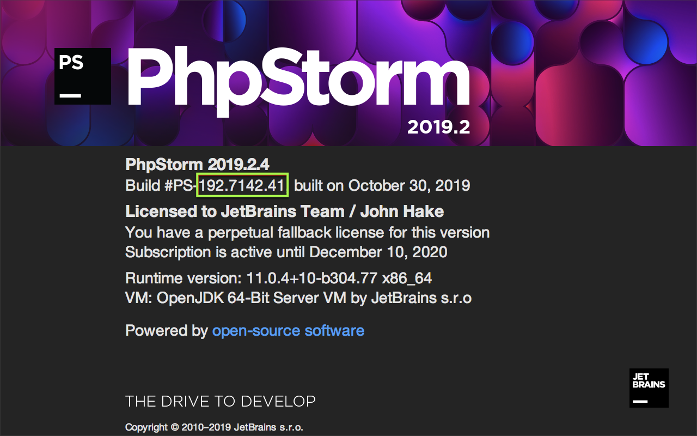

Plugins Targeting IntelliJ Platform-Based IDEs
Introduction
Plugin projects can target IDEs other than IntelliJ IDEA, as long as the products are based on the IntelliJ Platform. Such plugins are developed much like plugin projects that target IntelliJ IDEA, and can be written in Kotlin or Java, or a mix of both. Once completed, the plugins can be packaged and distributed at plugins.jetbrains.com.
Project configuration attributes common to projects targeting products other than IntelliJ IDEA are described here.
Details particular to an IntelliJ Platform-based product are described on the individual product pages in Part VIII.
All of the Gradle configuration attributes described here are discussed in-depth on the Configuring Gradle for IntelliJ Platform Plugins and the gradle-intellij-plugin README pages.
- Introduction
- Getting Started
- Configuring Build.Gradle to Target Products other than IntelliJ IDEA
- Configuring plugin.xml
Getting Started
To create a new Gradle plugin project, follow the tutorial on the Getting Started with Gradle page. The tutorial produces a skeleton Gradle project suitable to use as a starting point.
Modifications are needed to the skeleton project’s build.gradle and plugin.xml files, as described below, and on the individual product pages in Part VIII.
The build.gradle file is modified to specify the target product, which determines the APIs available during development.
The plugin.xml file is modified to declare the plugin’s dependency on modules or libraries.
Configuring Build.Gradle to Target Products other than IntelliJ IDEA
The best practice is to use the gradle-intellij-plugin intellij.type attribute to specify the target product.
For example, PY for PyCharm professional.
Configuration using an intellij.type attribute is explained in the Product-Specific Attribute section below.
However, not all products have an intellij.type attribute defined by the gradle-intellij-plugin.
For example, PhpStorm.
If the target product does not have an intellij.type attribute defined, then the best approach is to configure the project by using the IntelliJ IDEA Attribute.
Configuring Plugin Projects using a Product-Specific Attribute
If the gradle-intellij-plugin supports a target product directly, there will be an intellij.type attribute defined.
Specifying the target as a product-specific intellij.type attribute has two advantages:
- The APIs available to the plugin will be limited to only what is defined in the target product. (Unless additional plugin dependencies are specified.)
- The default Development Instance for running the plugin will be the target product.
A build.gradle snippet setting a plugin project to target PyCharm is shown below.
The gradle-intellij-plugin will fetch the matching build of PyCharm Professional to define the APIs available, and use that build of PyCharm (and associated JetBrains runtime) as the Development Instance.
No additional product-specific configuration needs to be set in build.gradle:
intellij {
version '2019.2.3'
type 'PY'
}
Configuring Plugin Projects using the IntelliJ IDEA Product Attribute
If the gradle-intellij-plugin does not directly support an IntelliJ Platform-based product, the build.gradle file can still be configured to target the desired product.
In this case, the build.gradle file is configured to use IntelliJ IDEA (Community or Ultimate Edition) as the basis for the available APIs.
This does have the drawback that APIs not specific to the target product might accidentally be included in the plugin project.
However testing the plugin project in the target product helps to find such mistakes.
Additional configuration must be done to match the version of IntelliJ IDEA to the version of the target product. Understanding the relationship between build numbers is critical when using this approach to project configuration:
- targetIDE is the (version-specific) IntelliJ Platform-based IDE in which the plugin is intended to run, such as PhpStorm.
- baseIntelliJPlatformVersion is the (version-specific) IntelliJ Platform used in the build of the targetIDE.
The IntelliJ Platform is defined by a specific build of the IntelliJ IDEA Community Edition.
The Gradle plugin attribute
intellij.versionis set to be baseIntelliJPlatformVersion.
For API compatibility, the IntelliJ Platform version used in the targetIDE dictates the baseIntelliJPlatformVersion used for developing a plugin.
Matching Versions of the IntelliJ Platform with the Target IDE Version
The baseIntelliJPlatformVersion used in the targetIDE may not be readily apparent, depending on the product. See the individual product pages in Part VIII for exceptions.
To find the version of the IntelliJ Platform used to build the targetIDE, use the About dialog screen for the targetIDE.
Next to Build # is the BRANCH.BUILD.FIX version of the targetIDE.
In the example shown below, the (BRANCH.BUILD.FIX) version is 192.7142.41, and the product version is 2019.2.4.
The version of the IntelliJ Platform used to build this product version is BRANCH.BUILD, or 192.7142

If the product version isn’t clear on the About screen, consult the individual product pages in Part VIII.
The Other IntelliJ IDEA Versions page is a way to find build numbers for every product version.
Additional ways include hovering over the version number for a product in ToolBox, or examining the About screen for IntelliJ IDEA Community.
In this example, IntelliJ IDEA Community Edition (which defines the IntelliJ Platform) for 2019.2.4 is build number 192.7142.36.
Although the FIX versions are different, this is not uncommon between products, and the builds are still compatible.
The BRANCH and BUILD numbers match, therefore in this PhpStorm example:
- The targetIDE is PhpStorm, build
192.7142.41, - The baseIntelliJPlatformVersion (IntelliJ IDEA Community Edition) is build
192.7142.36
This information is used to configure the plugin project’s build.gradle and plugin.xml files.
Configuring build.gradle using the IntelliJ IDEA Product Attribute
Configuring a Gradle plugin project for using baseIntelliJPlatformVersion requires changing some of the default settings in the build.gradle file.
Changes need to be made in two tasks: intellij {} and runIde {}.
The Gradle plugin attributes describing the configuration of the IntelliJ Platform used to build the plugin project must be explicitly set in the intellij {} task.
The intellij.type is “IU” because although the IntelliJ IDEA Community Edition defines the IntelliJ Platform, the PHP plugin is only compatible with IntelliJ IDEA Ultimate.
The intellij.version is baseIntelliJPlatformVersion.
Any dependencies on targetIDE-specific plugins or modules must be declared in the intellij {} task.
Use the Gradle plugin attribute intellij.plugins to declare a dependency.
See the specific product pages in Part VIII for the targetIDE plugin or module name.
The best practice is to modify the runIde {} task to use a local installation of targetIDE as the IDE Development Instance.
Set the runIde.ideDirectory attribute to the (user-specific) absolute path of the targetIDE application.
The exact path format varies by operating system.
This snippet is an example for configuring the Setup and Running DSLs in a build.gradle specific to developing a plugin for targetIDE.
intellij {
// Define IntelliJ Platform against which to build the plugin project.
// Use the IntelliJ Platform BRANCH.BUILD version matching "targetIDE" (PhpStorm)
version '192.7142.36' // baseIntelliJPlatformVersion
type 'IU'
// Require the targetIDE plugin or library
// Use the stable version compatible with intellij.version and intellij.type specified above
plugins 'com.jetbrains.php:192.6603.42'
}
runIde {
// Absolute path to the installed targetIDE to use as IDE Development Instance
// Note the Contents directory must be added at the end of the path for macOS.
ideDirectory '/Users/<user name>/Library/Application Support/JetBrains/Toolbox/apps/PhpStorm/ch-0/192.7142.41/PhpStorm.app/Contents'
}
Configuring plugin.xml
As discussed on the Plugin Dependencies page of this guide, a plugin’s dependency on Modules Specific to Functionality must be declared in plugin.xml.
When using features (APIs) specific to the target product, a dependency on the target product module must be declared, as shown in the code snippet below.
Otherwise, if only general IntelliJ Platform features (APIs) are used, then a dependency on com.intellij.modules.platform must be declared as discussed in Plugin Compatibility with IntelliJ Platform Products.
Continuing with the example of developing a plugin for PhpStorm:
<!-- Targeting PhpStorm, so is dependent on the PHP plugin -->
<depends>com.jetbrains.php</depends>
<depends>com.intellij.modules.platform</depends>